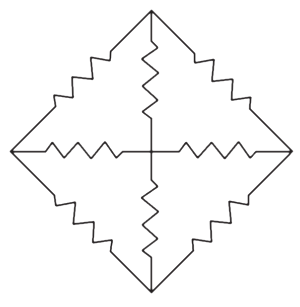

1) A body attach to the lower end of a vertical spring oscillates with time period of 1 sec. The time period when two such spring are connected one below another is approximately
- 0.7 sec
- sec
- 1.4 sec ✔
- 2 sec
2) When a spring is stretched by 10cm, the potential energy stored is E. when the spring is stretched by 10cm more, the potential energy stored in the spring becomes
- 2E
- 4E ✔
- 6E
- 10E
3) a bullet on penetrating 30 cm into its target loses its velocity by 50%. What additional distance will it penetrate into the target before it come to rest?
- 30 cm
- 20 cm
- 10 cm ✔
- 5 cm
4) In uniform circular motion, the work done by the centripetal force in half the the rotation is equal to
- π mv²
- 2π mv²
- 2mv²
- zero ✔
5) A rifle shoots a bullet of 60 gm with a valocity of 50 m/s. The velocity of recoil of rifle is 2 m/s. The mass of rifle is
- 3.0 kg
- 2.0 kg
- 1.5 kg ✔
- 1.0 kg
6) When a solid sphere, a hollow sphere, a ring and a dise all roll down the same inclined plane, the kinetic energy is maximum for
- ring
- dise
- solid sphere ✔
- hollow sphere
7) A balloon starts rising from the ground with an acceleration of 1.25 m/s 2. After 8 s, a stone is released from the balloon. The stone will
- cover a distance of 40 m
- have a displacement of 50 m
- reach the ground in 4 s ✔
- begin to move down after being released
8) When a ceiling fan is switched on, it makes 10 rotations in the first 3 seconds. How many rotations will it make in the next 3 seconds? (Assume uniform angular acceleration.)
- 10
- 20
- 30 ✔
- 40
9) Which of the following is not true for a region with a uniform electric field?
- It can have free charges.
- It may have uniformly distributed charge.
- It may contain dipoles.
- None of the above ✔
10) ‘All charge on a conductor must reside only on its outer surface.’ This statement is true
- in all cases ✔
- for spherical conductors only (both solid and hollow)
- for hollow spherical conductors only
- for conductors which do not have any sharp points or corners
11) A charged particle moves with a speed v in a circular path of radius r around a long uniformly charged conductor.
- v ∝ r
- v ∝ 1/r
- v ∝ 1/√r
- v is independent of r ✔
12) In the network shown, each resistance is equal to R. The equivalent resistance between diagonally opposite corners is
- R
- R/3
- 2R/3 ✔
- 4R/3
13) The area under acceleration time graph gives
- distance travelled
- change in acceleratin
- force acting
- change in velocity
14) Which of the following statement(s) is/are correct?
I. K.E. of a system can be changed without changing its momentum
II. Momentum of a system can be changed without changing its K.E.
- I only
- II only
- I and II
- None of these
15) In a common base amplifier, the phase difference between the input signal voltage and output voltage is
- π
- π/4
- π/2
- 0
16) In bridge rectifier circuit, (see fig.), the input signal should be connected between
- A and D
- B and C
- A and C
- B and D
17)
18)
19)
20)
21)
22)
23)
24)
25)
26)
27)
28)
29)
30)
31)
32)
33)
34)
35)